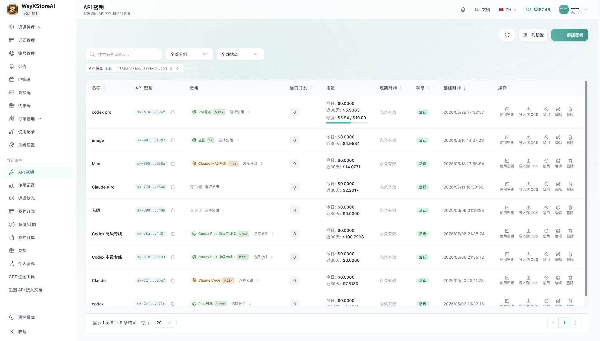

Panel 01接入效率
One endpoint.
Every model.
Use one OpenAI-compatible API to reach leading text, code, and image models.
base_urlmasked keyPython / TSmodel switch

Homepage demo
只放一个 8 秒动作：复制端点 → 选择模型 → 发出首个请求 → 返回统一响应。Key 使用虚构遮罩值。